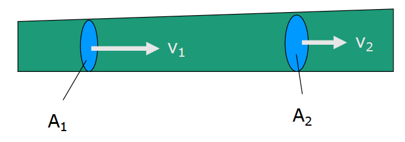
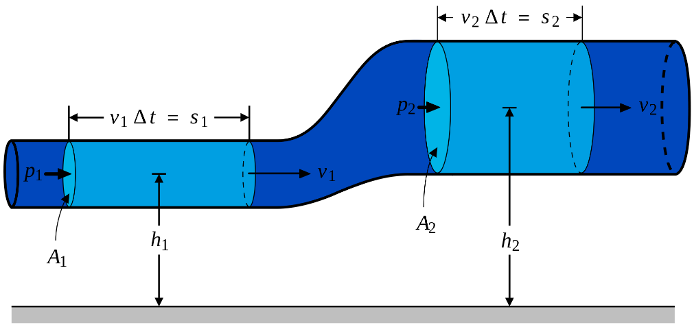
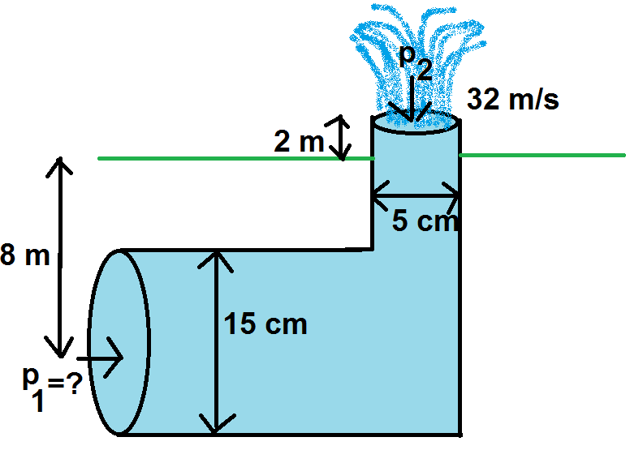
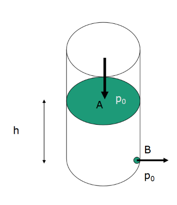
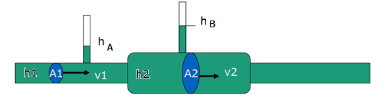

Liikkuvat nesteet ja kaasut
Contents
Liikkuvat nesteet ja kaasut¶
Kun neste tai kaasu virtaa esimerkiksi putkessa, siihen voidaan soveltaa energian säilymislakia. Nesteille ja kaasuille muokatussa muodossa sitä kutsutaan nimellä Bernoullin laki. Tässä käytetään selkeyden vuoksi aineista nyt vain nimitystä “neste”.
Virtauksen jatkuvuusyhtälö¶

Nesteiden virtausnopeus vaihtelee sen mukaan, millaisessa tilassa neste liikkuu. Oletetaan, että nestettä virtaa putkessa, jonka poikkipinta-ala \(A\) vaihtelee. Joka kohdassa putkea vettä vertaa poikkileikkauksen läpi yhtä suuri tilavuus \(V\) tietyssä ajassa \(t\). Tilavuus voidaan ilmaista poikkipinta-alan, ajan ja nesteen nopeuden \(v\) avulla muodossa \(V=Avt\). Merkitään putken kahden eri kohdan poikkileikkausten pinta-alaa \(A_1\) ja \(A_2\). Tällöin nesteellä on näissä kohdissa eri nopeudet \(v_1\) ja \(v_2\). Jotta putken läpi virtaisi jokaisella aikavälillä saman verran nestettä, on oltava voimassa \(A_1 v_1 t=A_2 v_2 t\). Jakamalla yhtälö puolittain ajalla \(t\) saadaan virtauksen jatkuvuusyhtälö:
\(A_1 v_1=A_2 v_2\)
Esim. Vesi liikkuu puutarhaletkussa nopeudella 3 m/s. Letkun poikkileikkaus on ympyrä, jonka halkaisija on 1.6 cm. Millä nopeudella vesi poistuu letkusta, kun se kulkee suuttimen kautta? Suuttimen poikkileikkaus on ympyrä, jonka halkaisija on 0.5 cm.
Ratkaisu
Ratkaistaan kysytty nopeus \(v_2\) yhtälöstä \(A_1 v_1=A_2 v_2\):
\(v_2=\frac{A_1}{A_2} v_1\)
Pinta-alat saadaan säteiden avulla: \(A_1=\pi \cdot (0.8~\text{cm})^2, A_2= \pi \cdot (0.25~\text{cm})^2\).
Loppunopeus on siis \(v_2=\frac{\pi\cdot(0.8~\text{cm})^2}{\pi\cdot (1.6~\text{cm})^2}\cdot 3\frac{\text{m}}{\text{s}} = \frac{(0.8~\text{cm})^2}{(1.6~\text{cm})^2}\cdot 3\frac{\text{m}}{\text{s}}= 31\frac{\text{m}}{\text{s}}\)
Bernoullin laki¶
Bernoullin laki on mekaanisen energian säilymislaki sovellettuna putkessa liikkuvalle nesteelle: Jos tietyllä nestemäärällä on jossakin pisteessä tietty määrä mekaanista energiaa ja sitten nestemäärään tehdään jotakin ulkoista työtä, saadaan saman nestemäärän mekaaninen energia jossakin toisessa pisteessä.

Kuvan merkinnöillä saadaan yhtälö \(mgh_1+\frac{1}{2} mv_1^2+W=mgh_2+\frac{1}{2} mv_2^2\),
joka voidaan muokata muotoon \(\rho Vgh_1+\frac{1}{2} \rho V v_1^2+W=\rho Vgh_2+\frac{1}{2} \rho V v_2^2\).
Nesteeseen kohdistuva työ on peräisin paineesta \(p\), joka voi olla esimerkiksi ulkoinen ilmanpaine. Tällöin nesteeseen kohdistuva voima on \(F=pA\) ja työ \(W=Fs=pAs=pV\). Näillä merkinnöillä energiaperiaate saadaan muotoon
\(\rho g h_1+\frac{1}{2} +\rho v_1^2+p_1=\rho gh_2+\frac{1}{2} \rho v_2^2+p_2\),
jota kutsutaan Bernoullin yhtälöksi. Termiä \(\rho g h\) kutsutaan hydrostaattiseksi paineeksi ja \(\frac{1}{2} \rho v^2\) kutsutaan dynaamiseksi paineeksi. Niiden lausekkeet muistuttavat potentiaalienergian ja liike-energian laskukaavoja.
Esim. Millä paineella \(p_1\) on pumpattava vettä poikkileikkaukseltaan ympyrän muotoiseen putkeen, jotta vesi kohoaisi suihkulähteestä 10 metriä ylempänä nopeudella 32 m/s? Järjestelmän mitat on annettu kuvassa.

Ratkaisu
Sijoitetaan Bernoullin yhtälöön \(\rho gh_1+\frac{1}{2} \rho v_1^2+p_1=\rho gh_2+\frac{1}{2} \rho v_2^2+p_2\) lukuarvot:
\(\rho=1000 \frac{\text{kg}}{\text{m}^3}\),
\(p_2=101.3~\text{kPa}\) (ulkoinen ilmanpaine),
\(v_2=32\frac{\text{m}}{\text{s}}\),
\(h_1=-8~\text{m}\) (maanpinnan alapuolella) ja
\(h_2=2~\text{m}\) (maanpinnan yläpuolella)
Nopeus putken alussa saadaan jatkuvuusyhtälön avulla: \(v_2=\frac{(2.5~\text{cm})^2}{(7.5~\text{cm})^2} v_2=3.552 \frac{\text{m}}{\text{s}}\)
Kirjoitetaan yhtälö WolframAlphaan:
solve 1000*9.81*(-8)+0.5*1000*3.552^2+p=1000*9.81*2+0.5*1000*32^2+101.3*10^3
ja saadaan vastaukseksi \(p=705 092\) pascalia.
Bernoullin lain seurauksia¶
Bernoullin lain eräs seuraus on Torricellin laki. Se kertoo, millä nopeudella neste virtaa ulos kuvan tilanteessa reiästä B, kun reiän ja nesteen pinnan korkeusero on \(h\).

Bernoullin lain mukaisesti \(\rho g h_1+\frac{1}{2} +\rho v_1^2+p_1=\rho gh_2+\frac{1}{2} \rho v_2^2+p_2\)
Pisteessä A nesteellä on hydrostaattinen paine \(\rho g h\) ja dynaaminen paine 0 Pa (sillä jos ulosvirtausreikä on pieni verrattuna astian poikkileikkauksen pinta-alaan, niin astian pinnalla olevan nesteen nopeus on aluksi likimain nolla), ja siihen kohdistuu ulkoinen ilmanpaine \(p=p_0\). Pisteessä B nesteen hydrostaattinen paine on 0 Pa, sillä korkeus on pisteeseen \(h\) verrattuna nolla, ja dynaaminen paine \(\frac{1}{2} \rho v^2\), ja siihenkin kohdistuu ilmanpaine \(p=p_0\). Sijoitetaan nämä Bernoullin yhtälöön ja sievennetään:
\(\rho gh+p_0=\frac{1}{2} \rho v^2+p_0\)
\(\rho gh=\frac{1}{2} \rho v^2\)
\(gh=\frac{1}{2} v^2\)
Ratkaisemalla nopeus \(v\) tästä saadaan Torricellin laki: \(v=\sqrt{2gh}\). Laskukaava näyttää samanlaiselta kuin silloin, kun lasketaan kappaleen loppunopeutta, kun se putoaa tai liukuu kitkattomasti korkeudelta \(h\)!
Bernoullin lakia sovelletaan mm. lentokoneen toiminnassa. Lentokoneen siipi on muotoiltu siten, että ilman nopeus on eri suuruinen siiven ylä- ja alapuolella. Eri nopeuksista \(v_1\) ja \(v_2\) seuraa eri suuruinen dynaaminen paine. Paine-ero on suuruudeltaan \(p=\frac{1}{2} \rho v_1^2-\frac{1}{2} \rho v_2^2\), missä \(rho\) on ilman tiheys lentokorkeudella. Paine-erosta seuraa pinta-alalle \(A\) voima \(F=\frac{1}{2} \rho (v_1^2-v_2^2 ) A\), jonka seurauksena lentokone pysyy ilmassa.
Rakennustekniikassa samaa periaatetta voi soveltaa, kun arvioidaan miten rakenteet kestävät tuulta. Myrskytuulen nopeus on erisuuruinen katon yläpuolella kuin räystään alla, jossa se on pysähtynyt seinää vasten. Tuulen aiheuttama voima kattoon alalle \(A\) on suuruudeltaan \(F=\frac{1}{2} \rho (v_1^2-0^2 )\cdot A=\frac{1}{2} A \rho v_1^2\).
Pitot-putki, joka on kehitetty vuonna 1732, mittaa ilman tai veden nopeutta paine-eron avulla. Se on käytössä vielä nykyään lentokoneissa ja sukellusveneissä. Ilma pisteessä A liikkuu nopeudella \(v_A\), joka halutaan selvittää. Pisteessä B ilma on pysäytetty seinämää vasten, joten \(v_B=0\). Siis Bernoullin laki muuttuu muotoon \(\frac{1}{2} \rho v_A^2=p_B-p_A\), josta saadaan tulos \(v_A=\sqrt{\frac{2(p_B-p_A)}{\rho}}\). Usein käytetään paine-eron mittaukseen elohopeamanometria, jolloin \(p_B-p_A=(\rho_{\text{Hg}}-\rho)gh\), missä \(\rho_{\text{Hg}}\) on elohopean tiheys ja \(h\) on nestepatsaan korkeus.
Eräs rakennustekniikassa hyödynnettävä Bernoullin lain sovellus on venturiputki. Se mittaa virtausnopeutta putkistoissa.

Oletetaan kuvan kaltainen vaakasuora putki, jolloin voidaan valita \(h_1=h_2=0\) ja Bernoullin laki sievenee muotoon \(\frac{1}{2} \rho v_1^2+p_1=\frac{1}{2} \rho v_2^2+p_2\). Nyt \(p_1\) ja \(p_2\) vastaavat veden painetta eri levyisissä kohdissa 1 ja 2. Jatkuvuusyhtälöstä saadaan: \(v_2=\frac{A_1}{A_2} v_1\).
Muokataan Bernoullin laki muotoon \(p_1-p_2=\frac{1}{2} \rho v_2^2-\frac{1}{2} \rho v_1^2\) ja edelleen (jatkuvuusyhtälöstä sijoittamalla)
\(p_1-p_2=\frac{1}{2} \rho v_1^2 \left[\left(\frac{A_1}{A_2}\right)^2 -1 \right]\)
ja tästä voidaan ratkaista virtausnopeus \(v_1=\sqrt{\frac{2(p_1-p_2)}{\rho \left[\left(\frac{A_1}{A_2}\right)^2-1\right]}}\).
Paine-eron \(p_1-p_2\) tilalle voidaan vielä johtaa \(g(h_A-h_B)\).
Reynoldsin luku¶
Kaasun tai nesteen virtaus voi olla enemmän tai vähemmän laminaarista tai turbulenttia. Laminaarisessa virtauksessa aine etenee kerroksittain, eivätkä kerrokset sekoitu keskenään. Edellä mainitut mallit kuvaavat hyvin tällaista virtausta. Turbulentissa virtauksessa esimerkiksi väriaine leviää kaikkialle nesteeseen. Nesteen kulku ei noudata yksinkertaisia malleja. Virtauksen sijoittumista laminaarinen – turbulentti –asteikolle kuvataan Reynoldsin luvulla \(Re\):
\(Re= \frac{\rho v D}{\eta}\)
missä \(\rho\) on nesteen tiheys (\(\frac{\text{kg}}{\text{m}^3}\)), \(v\) nesteen virtausnopeus (\(\frac{\text{m}}{\text{s}}\)), \(D\) putken halkaisija poikkileikkaukseltaan ympyrän muotoisessa putkessa (\(\text{m}\)) ja \(\eta\) viskositeetti (\(\text{Pa}\cdot \text{s}\)). Virtausta voidaan karkeasti jaotella Reynoldsin luvun mukaan seuraavasti:
Jos \(Re < 2000\): virtaus on laminaarista
Jos \(2000 < Re < 3000\): virtauksessa on sekä laminaarisia että turbulentteja piirteitä
Jos \(Re > 3000\): virtaus on turbulenttia
Edellisessä yhtälössä viskositeetti \(\eta\) kuvaa virtaavan aineen virtausvastusta tai ”jäykkyyttä” tietyssä lämpötilassa. Taulukossa on esimerkkejä viskositeeteista. Öljyjen viskositeetti on noin 1-2 \(\text{Pa}\cdot\text{s}\), siis yli tuhatkertainen veden viskositeettiin verrattuna. Moottoriöljyille viskositeetti ilmoitetaan yleensä toisessa yksikössä.
t (°C) |
\(\eta_{\text{vesi}}\) ,mPa⋅s |
\(\eta_{\text{ilma}}\), μPa⋅s |
|---|---|---|
0 |
1.79 |
17.3 |
20 |
1.00 |
18.1 |
40 |
0.654 |
18.7 |
60 |
0.467 |
20.1 |
80 |
0.355 |
21.0 |
100 |
0.283 |
21.4 |